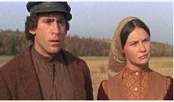
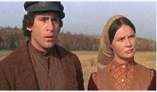
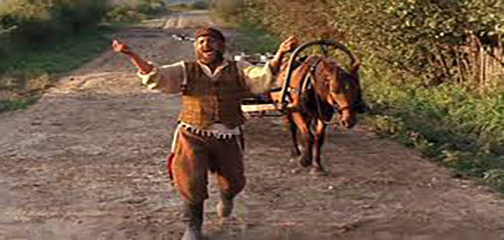
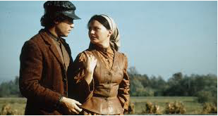
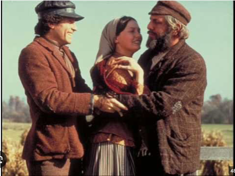
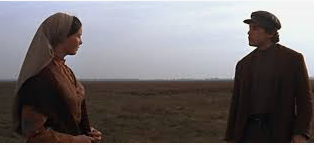
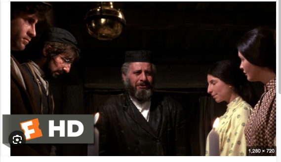

This is from the great movie called Fiddler on the Roof from 1971. Here, it tells another brief story of the wonderful relationship between the next daughter Hodel and the educated but determined stranger whose name is Perchik.
Tradition is extremely important within this community as the father has many goals to follow out to ensure happiness and/or balance. One responsibility is to see that his daughters are married off when age appropriate.
Perchik arrives at the village eager to give out knowledge to the village, as he receives in return friendship and food from Tevye the father. He later falls for the educated Hodel as he falls for her intelligence and beauty.
 A love bond is defined by a sense of belonging, trust, respect and mutual affection.
 However, trouble finds Perchik's intelligent ways and gets him into danger and is sent away because he was protesting in the big city.
At the end, Hodel travels to a far off land to be with Perchik to support him with his work as her love and future are redefined.